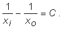
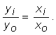

Lentile divergente
Uneori avem nevoie să mărim divergenţa unui fascicul de lumină.
 Activitatea experimentală 1
Activitatea experimentală 1
Determină cum este deviată lumina de o lentilă mai subţire la mijloc decât la margini. Lucrează în echipă.
Procedaţi ca la activitatea experimentală 1 de la secţiunea 1C2.
Folosiţi de data aceasta o placă plană de sticlă mărginită de două suprafeţe curbe concave (din trusa de optică).
Un fascicul de lumină paralel cu axa optică principală a lentilei este transformat într−unul divergent (figura 1)!
Fig. 1.  Transformarea unui fascicul paralel într−unul divergent.
Transformarea unui fascicul paralel într−unul divergent.
Lentila este divergentă. Toate lentilele prezentate în secţiune în figura 2 sunt divergente dacă se află într−un mediu al cărui indice
de refracţie este mai mic decât cel al materialului din care sunt confecţionate lentilele.

Fig. 2.
Lentile divergente şi simbolul acestora.
 Provocarea 1
Provocarea 1
Cât este distanţa focală a lentilei divergente cu care ai lucrat la activitatea experimentală precedentă?

Lentilele divergente au convergenţa negativă.
Provocarea 2
Cât este convergenţa lentilei cu care ai lucrat la activitatea experimentală precedentă?
Lentilele divergente formează imagini virtuale ale obiectelor, indiferent la ce distanţă se află acestea de lentilă (figura 3).
Fig. 3.
Formarea imaginii unui obiect de către o lentilă divergentă.
Provocarea 3
O lentilă are convergenţa -20 dioptrii. La 10 cm de lentilă se află un obiect.
Care sunt caracteristicile imaginii acestui obiect?
Pentru a afla caracteristicile unei imagini, poţi încerca o reprezentare grafică la o scară aleasă convenabil (figura 4).
Fig. 4.
Determinarea grafică a imaginii formată de o lentilă divergentă.
Raza paralelă cu axa optica principală a lentilei este deviată ca şi când ar pleca din focarul imagine al lentilei, iar raza care trece prin centrul
lentilei îşi continuă drumul aproape nedeviată.
Imaginea vârfului A al obiectului se formeaza la intersecţia acestor două trasee. Este o imagine virtuală, deoarece aici nu se intersectează traseele
reale ale luminii, ci doar unul dintre trasee cu prelungirea celuilalt.
Imaginea este dreaptă, micşorată şi mai aproape de lentilă decât obiectul. Făcând măsurători pe desen şi ţinând cont de scara desenului, poţi găsi că
imaginea se formează la 3,3 cm de lentilă, de aceeaşi parte cu obiectul şi este de 3 ori mai mică decât acesta.
Dacă ai posibilitatea, realizează desenele la scară folosind un calculator personal. Chiar şi o aplicaţie grafică simpla, cum este Paint,
îţi permite să realizezi rapid şi comod aceste desene. Precizia realizării şi a măsurătorilor depăşeşte cu mult ceea ce ai putea obţine desenând cu
rigla şi creionul pe hârtie!
Când nu poţi utiliza un desen la scară, poţi afla caracteristicile imaginii aplicând formula lentilelor:

În cazul concret al provocării 3, C = −20 m-1, iar xo = −10 cm (s−a
ales sensul axei optice astfel încât obiectul să se afle în partea negativă a axei).
Rezolvând această ecuaţie, vei obţine coordonata imaginii:
xi = −3,33 cm
Acest rezultat indică faptul că imaginea se formează de aceeaşi parte a lentilei în care se află şi obiectul. Este aşadar o imagine virtuală. Imaginile
reale se formează în cealaltă parte a lentilei decât cea în care se află obiectul!
Din asemănarea triunghiurilor formate de obiect, imagine şi raza care trece prin centrul lentilei, obţii raportul coordonatelor y ale vârfurilor
imaginii şi obiectului:

Cu valoarea calculată pentru xi, rezultă că:
Astfel ai obţinut că imaginea este de 3 ori mai mică decât obiectul şi este o imagine dreaptă (coordonatele yi şi yo
au acelaşi semn).